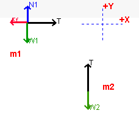

Lesson - Free Body Drawer
The applet Free Body Drawer teaches you how to construct free body diagrams.
Preamble
This lesson will give you practice drawing and using
free body diagrams.
The applet should be open. The step-by-step instructions
in this lesson are to be carried out in the applet. You may need to toggle back
and forth between instructions and applet if your screen space is limited. You
should be prepared to do calculations to verify the numbers that are generated
by the applet.
What is a Free Body Diagram?
Free Body Diagrams are an indispensable tool used in the
analysis of forces and the application of Newton's Laws. Essentially, a Free
Body Diagram is a representation of all forces acting on a body. If a system
consists of more than one body then it is essential that a free body diagram
be constructed for each object. In what follows you should use the applet
Free Body Drawer to help give you practice in creating Free Body Diagrams.
As you will see, with a little practice and careful attention to details,
making a Free Body Diagram is an easy process that will greatly improve you
ability to understand otherwise complex physical situations.

How to Draw Free Body Diagrams
- Press the projects button in the upper left (
 )
and select the project labeled "project". Load the image
shown on the right. A correct Free Body Diagram for this situation
would show 4 forces: )
and select the project labeled "project". Load the image
shown on the right. A correct Free Body Diagram for this situation
would show 4 forces:
- the gravitational force or weight of the block
- the Normal force of the surface pressing up on the block
- the frictional force opposing the motion of the block
- the force applied by the rope and directed to the right
- Use the applet to draw in theses forces and then compare your drawing
with the computer generated FBD.
|
|
- Let's look carefully at the FBD for this example. Your
FBD should look similar to the one appearing on the right.
- A common practice (but not essential) is to draw the FBD away from
the original diagram and just as a set of vectors emerging from a
point. In this example you can see the 4 forces identified in part
1.
- Since the surface is level the Normal force and the Weight are equal
and acting in opposite directions.
- Similarly, the block is not accelerating to the right. This tells
us that the net force to the right is zero and that the frictional
force is equal in magnitude and opposite in direction to the Tension
force applied by the rope.
|
|
- As a slightly different version of the previous example,
try the setup shown at the right: which is part of the FBD's in this
project:.
- Identify the 4 forces relevant to this FBD and draw the FBD. Make
sure to explain why you drew the forces the way you did.
|
|
How to Create Equations from Free Body Diagrams
- Let's make a FBD for the system shown on the
right. Now we see two bodies in the system and hence must make two
FBD's.
- The FBD for m1 will be identical
to the one you made in the previous example. The FBD for m2 will show
the combination of two forces: Weight and Tension.
- The FBD's are shown below. As well, note that
a set of coordinate axes have been drawn in. YOU MUST CHOOSE THIS
- the applet will not assign coordinates or draw them in.
|
|
|  |
- Choosing Coordinate Axes is essential
if you are to assign correctly the directions (hence signs) for forces.
Any force pointing in the +X or +Y directions will be treated as positive
and ay force in the opposite directions will be treated as negative.
- We are now able to write simple equations
describing the forces in the X and Y directions for each body. This
is done below:
|
| Equations for Mass 1 |
In the X direction: Tension points in the positive direction
while Force of friction is in the negative direction. This becomes .
But the net force, by Newton's Second Law is always ,
so the X-equation becomes
In the Y direction: the Normal force points up (positive) and
Weight is down (negative) and the mass is not accelerating in this direction
(net force is zero) so .
|
| Equations for Mass 2 |
In the Y direction: the Tension force acts upward
(positive) while the weight force acts downward. Also, mass 2 is accelerating
in the downward direction. The equation for mass 2 is:  |
Problems
Use the applet Free Body Drawer and the project labeled
"project" to complete the following table in which you:
-
identify and list forces in the
system
-
draw a correctly labeled Free
Body Diagram
-
draw a convenient coordinate system
to permit assigning directions
-
give relevant force equations
for the FBD(s) that you made
|
|
List Forces
|
Draw FBD
|
Equations
|
|
1
|
|
|
|
|
2
|
|
|
|
|
3
|
|
|
|
|
4
|
|
|
|
|
5
|
(Hint: use a tipped coordinate
system for mass 1 and a "normal" one for mass 2) |
|
|
|
6
|
|
|
|
|
7
|
|
|
|